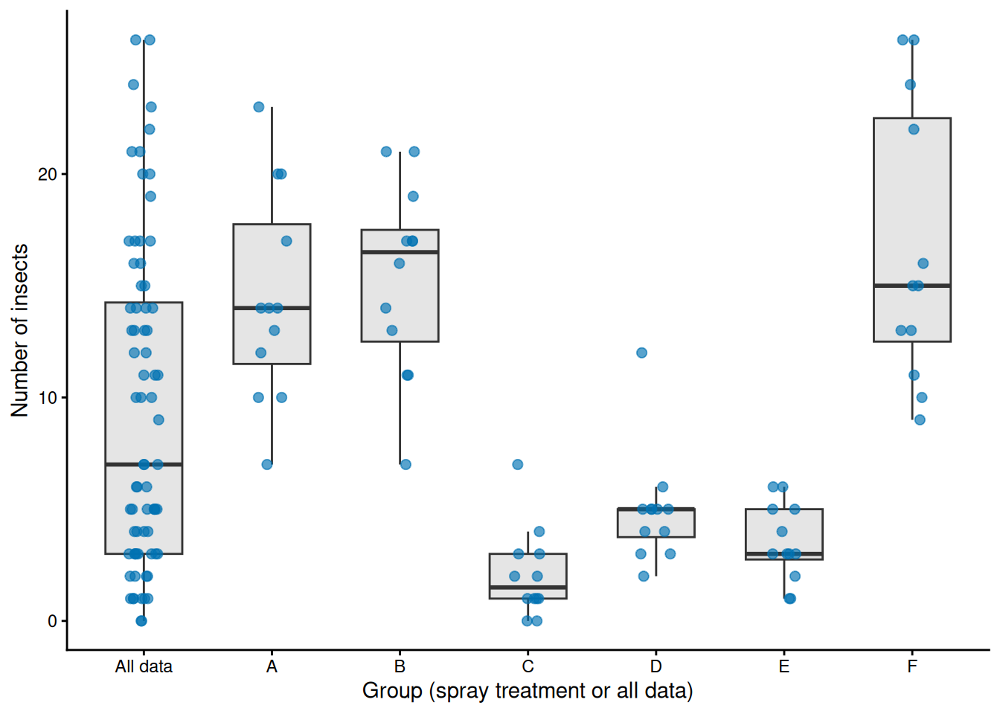
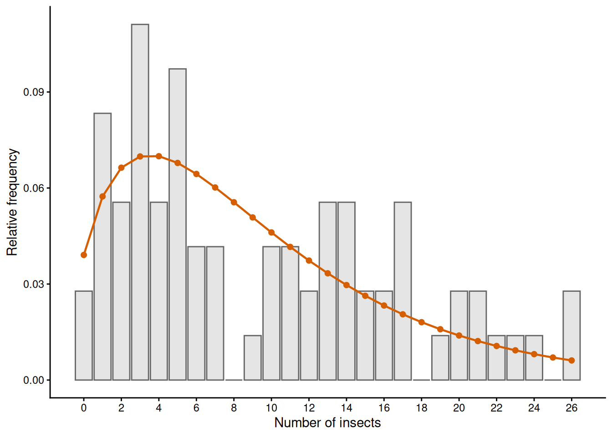
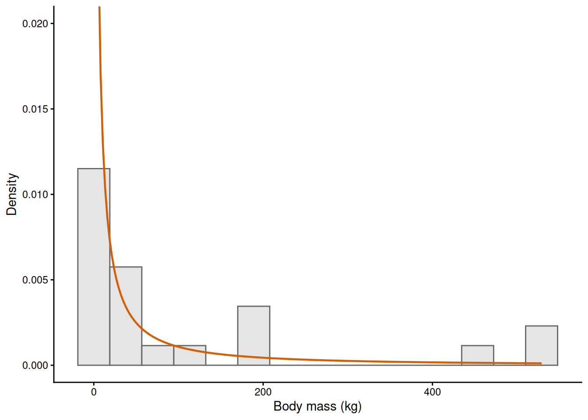
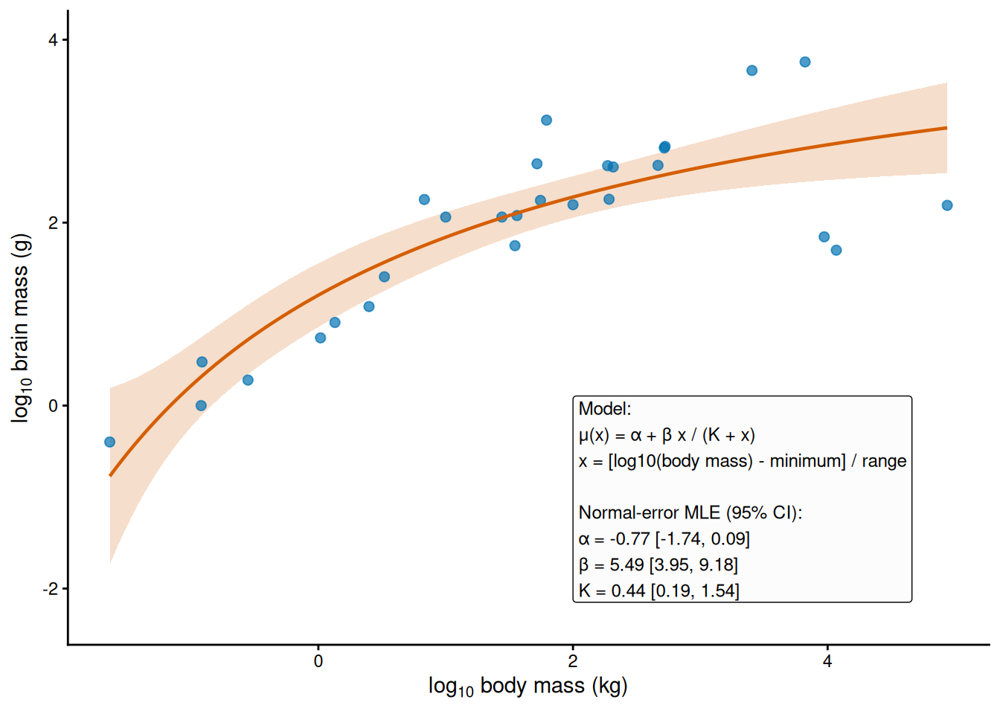
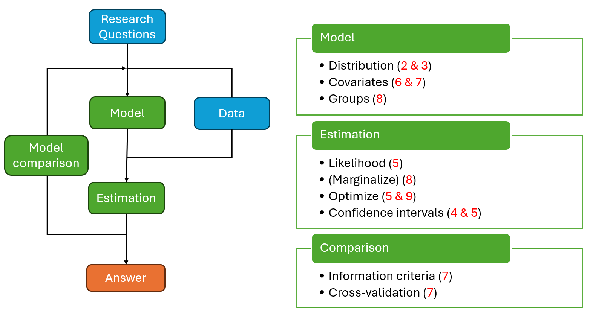
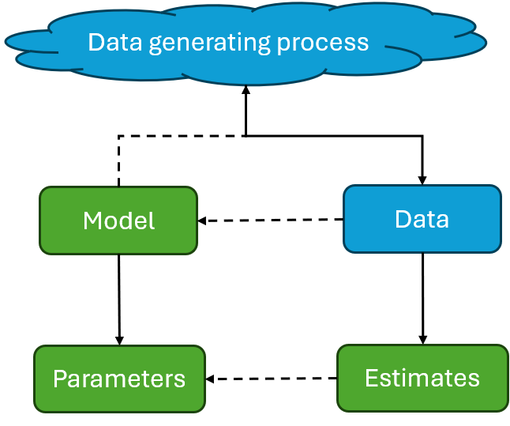

Ecological Models and Data
1 Overview of the book
The purpose of this book is to help your learn how to ecological models and statistics to answer ecological questions with data. A model is a simplification of reality that captures some ecological relationship and are often derived from theory or accumulated knowledge in a field. These include functional responses in predator-prey relationships, ecophysiological responses to the environment, growth curves, allometric relationships, gradients or time series. We learn these models in ecology courses, but they always remain rather theoretical and mathematical. We learn about oscillations, hystereris, tipping points and other exciting phenomena, but it always feels somewhat detached from the more experimental, boots on the ground ecological research.
When it comes to the more experimental research, statistics tends to dominate. It is all about p-values, statistical significance and testing those pesky assumptions. The statistics that you often learn was developed in the first half of XX century, it focuses on factorial experiments, linear responses and everything seems to follow Normal distribution.
So what is the issue? If you like math and beautiful graphs you do modelling and get some data from the literature or your colleagues while you enjoy sitting in front of the computer most of the time, at room temperature. If you like going out to the field and seeing Nature, you do cool experiments, collect some data, test the assumptions of your ANOVA and… it does not work. Ecological variables do not response linearly to their drivers, they do not follow Normal distributions and a lot of your data will not come from nice, balanced, factorial experiment (because things go wrong in the field or sometimes it is just not logistically possible). What do to then?
The proposal of this book is to combine both disciplines. Take the knowledge that we have from ecological modelling, all the weird distributions with confusing names that actually describe how ecological variables behave and combine them. We combine them using the same statistical machinery behind your classic linear models or the not so classic generalized linear model. And we give on the idea of null hypothesis testing and p-values and use the models to answer the research questions that we actually care about.
For example, instead of asking “Does tempearture affect insect development?” You would ask “How quickly does development change across the observed temperature range, and is there evidence of a thermal optimum?” Or for example, instead of asking “Is the effect of this treatment on seedling survival statistically significant?” you would ask “How much does the treatment change seedling survival, and is that change large enough to affect recruitment?” In a nutshell, we turn away from oversimplistic binary question and focus on subtle, quantitative questions that have direct relevant to the ecological context of interest.
This is not my own original idea and this view is slowly growing across ecologists, though many communities are still dominated by the orthodoxy of (generalized) linear (mixed) models and p-values. I am not sure if we can pinpoint an origin or seminal paper for this idea, but in my case I learnt it by reading the book Ecological Models and Data in R by Benjamin Bolker in 2010, and it changed how I looked at data. In fact, I used to not like statistics (but loved modelling) and reading his book completely changed in my mind. I have read many other books since then that share in this idea (though often from a Bayesian perspective where rolling your own model is more the norm). In a sense, this book is my humble homage to that original great book.
In the rest of this chapter I want to talk a bit about why probability matters in ecological research and I elaborate a bit more on why the standard statistics that I assume you have learnt are not enough. There is a roadmap at the end but do not worry too much about it, it is more of a reference/summary that will make more sense once you start reading the different chapters themselves.
2 Why probability matters in ecological research
Probability is one of those words that we think we know what it means but it is actual hard to agree on exact, more technical meanings. In the XXI century, the formal answer to the question “What is probability?” is a mathematical answer. Probability is a mathematical concept and is associated to functions that have specific properties. The more problematic question si “What does probability mean?” Philosophers, statisticians and practitioners have been debating the answer to this question for at least 250 years. And the debate is not settled.
We will stay away from the more dogmatic view points and simply accept that probability is a tool that can be used to model capture (i) unexplained variation, in all of its forms, and (ii) uncertainty, which is the consequence of unexplained variation. In other words, probability gives us a way to describe variation in the ecological process, imperfect observations, and uncertainty about model parameters and predictions. Note that this view of probability is not shared by all. But do not fear, the methods that we will use are very orthodox and, in fact, reduce to classical statistics for the specific conditions where those methods are valid. Its just that the approach I follow is more pragmatic and simplifies things a bit, so that we can focus more the modeling and ecological research and less on statistical purity.
2.1 Observation error
Observation error is the difference between what actually happens in reality and what we record. We may miss an individual or count it twice, instruments never give perfect readings or the protocols are not followed perfectly. Observation error changes the data we analyse, not the underlying ecological reality.
We use probability to characterize the error of a particular observation procedure. Having repeated observations under the same conditions helps to determine this error more accurately, though we will always have to make judicious assumptions about which model to use to characterize it (these probability models are called distributions). We will learn that different distributions will match different types of observations and that they way in which the observations are collected also matters. There is no “one size fits all” and we in fact we will seldom use the Normal distribution! You can see a couple of examples of ecological data with non-Normal distributions fitted to them (Figure 1). You will learn in this course how to make these kind of plots and how to fit the distributions (and more).

InsectSprays dataset, with a fitted negative binomial distribution.

Animals dataset, with a fitted lognormal density.
2.2 Process error
Process error, also called process variation or stochasticity, describes variation in the ecological reality that is not explained by the deterministic part of a model. It differs from obervation error because it will still be there even if we had perfect measurements and had no uncertainty about the model (see below for this one). There can be countless reasons for process error, including:
- Environmental variability: temperature, rainfall, nutrients, disturbance, or habitat conditions vary across space and time.
- Unmeasured drivers: factors such as predators, competitors, disease, or food availability are not included in the model.
- Individual differences: organisms differ in age, size, genetics, condition, or behaviour.
- Random demographic events: births, deaths, reproduction, dispersal, and survival involve chance.
- Spatial and temporal dependence: nearby observations or repeated observations are more similar than independent observations.
- Interactions and nonlinearities: the effect of one factor depends on another, or responses change across environmental conditions.
- Model simplification: a model represents only part of a complex ecological process.
Do not confuse inability to explain variation with true randomness. Many seemingly random outcomes can be explained (and predicted) once you have a good enough model and measure all the relevant variables with sufficient accuracy. My best example of this is the work by Professor Persi Diaconis from Stanford University where he managed to build a model that predicted coin flips, provided that the initial conditions were measured accurately enough. There is a video from Numberphile that explains it really well.
A recorded value often reflects both process error and observation error. In simple models we may describe their combined variation with one probability distribution. However, if we can identify groups or clusters in the data that explain a significant part of the variation we can use hierarchical models (aka mixed effect or multilevel models) to disentangle the two or at least estimate a significant amount of process error. You will also learn how to do this in the later part of the book.
To illustrate this idea of separating different sources of error, I plot again the data on tobacco hornworm counts (Figure 2) but now I reveal that in the original experiments the plants were sprayed with different products and the researchers kept track of this. We can see in the plot that there is significant variation within the treatments and across the treatments. The variation across treatments is part of process error as we do not expect our measurements to have systematic errors depending on the treatment.
2.3 Parameter uncertainty
A model parameter is a quantity that helps the model adjust itself to fit the data better. The statistical view of the world is that, as far as parameter estimation is concerned, we will treat the data as if it was a random sample from the model. That randomness is precisely capturing the observation error and stochasticity or process error/variation mentioned in th above.
This means that the same model is compatible with different samples of data (that look similar but different) because of the random variations that we cannot explained with the model. In other words, there isn’t a one-to-one correspondence between a specific sample of data and a model. If we invert this way of thinking, we will conclude that, if we fix the data, we could have multiple models compatible with that particular sample of data and each of models correspond to different values of the parameters. The fact that we do not exactly which paramter values to use is what we call uncertainty.
We can see this idea in the relationship between mammal body mass and brain mass (Figure 3). Even after taking logarithms, species with similar body masses have different brain masses. Here we use a saturating response curve rather than asking R to draw a flexible smooth line. The shaded band is an approximate 95% confidence interval around the fitted mean response. It is not where we expect individual species to lie. It shows how the observed variation means that several similar response curves could be compatible with these data.

Animals dataset. A shifted and scaled Michaelis–Menten was fitted, shown are the mean model description and its 95% confidence interval. See inset for details.
There are two different ways of formally defining parameter uncertainty in statistics: the Frequentist and the Bayesian way. For large samples of data and simple models there is not much difference between them. For small dataset the Bayesian way can be superior but it is sensitive to prior assumptions that you need to bring to the table to complement what little data you have. That can introduce biases in your conclusions and Bayesian methods are still seen with suspicion by many researchers. So we will stick to the Frequentist intepretation in this book but be aware that (i) our estimations of uncertainty will be only approximate when we have little data and (ii) Bayesian methods are rising in popularity so you may end up having to learn them anyways (and this book is meant to be a bridge between traditional and Bayesian statistics).
2.4 Other applications
Probability can also model uncertainty about a model’s initial conditions (its starting state), which model to use, and inputs such as future rainfall. Alternative future scenarios add another source of uncertainty. Computers may also introduce numerical approximation error when calculating model predictions. Uncertain starting states and inputs are particularly relevant when a model predicts how a system changes through time, because their effects can carry into later predictions.
This book focuses on probability models for ecological observations and on fitted response curves. We do not work with dynamical models, so we will not develop these other sources of uncertainty in detail. We will still compare candidate models when we fit ecological response curves in Chapter 6 but we will not assign probabilities to models.
3 Why standard statistics are not enough
Most of us first learn statistics through linear models, ANOVA, and later perhaps generalised linear and mixed models. These are useful tools and you should not throw them away. But they are often taught as if the main challenge were choosing the right formula, checking a few assumptions (which often you hope pass or otherwise you are stuck), and seeing whether a coefficient is different from zero. That is not always the question we care about.
Ecological responses are very rarely obliged to be straight lines. A feeding rate may level off when a predator runs out of time to handle prey. Development may increase with temperature up to an optimum and then decline. Survival may change rapidly at low resource availability but barely at all once resources are abundant. We often already know something about these shapes from ecological theory, previous experiments, or simply from thinking about how organisms work. It seems a bit odd to ignore that knowledge and fit a straight line just because it is convenient.
Historically, convenience was a good reason to use simple models: more complicated models were difficult to fit as the math became untractable. That is no longer such a strong limitation. Modern computers allow us to fit, visualise, and check a much wider range of models by using numerical methods. The challenge is not whether we can fit a complicated model. It is whether the model represents an ecological relationship reasonably well, and whether the data can tell us anything useful about its parameters.
For example, imagine that we measure the feeding rate of a predator across a range of prey densities. We could ask whether prey density has a statistically significant effect on feeding rate. But a more useful set of questions might be: How quickly does feeding rate increase when prey are scarce? Does it reach a maximum? What is that maximum feeding rate? And how uncertain are those estimates?
A straight line might describe part of the observed range, but it cannot keep increasing forever. A predator has limited time to search for, capture, and handle prey. A saturating response curve can represent that biological constraint directly. Its parameters describe features of the system that we can discuss, compare among studies, and use in later ecological reasoning. Of course, those comparisons only make sense when the model definitions, units, organisms, and study conditions are sufficiently similar.
This is also why a small p-value is rarely the end of an ecological analysis (or the main goal). A test against a zero-effect null hypothesis can sometimes be useful, but it does not tell us whether an effect is large enough to matter, which ecological explanation is most credible, or whether the fitted relationship makes biological sense. In many cases, “nothing happens” is not even a plausible ecological model to compare with. We are usually choosing among several ways in which something might happen. In many cases, a large p-value is simply the result of not having enough data to detect a clear signal from noisy data. It says more about the size of your experiment or survey than whether there is an actual effect or not. Of course, the purist would say that “you either reject the null hypothesis or fail to reject, never accept it”, meaning that either you get a p-value below the threshold or you get nothing. But turning research into a success/failure story is not so useful and provides the wrong kind of incentives to researchers. If you are interested in the current debates about “Moving beyonf p < 0.05” I suggest starting by the editorial by Wasserstein et al. on the topic1
The approach in this book is to make those choices explicit. We combine an ecological response function with a probability model for the observations. This lets us estimate parameters, describe uncertainty, compare plausible candidate models, and check whether the fitted model captures important features of the data. The aim is not to replace every linear or mixed model with something more elaborate. It is to use the simplest model that can answer the ecological question we actually have. If that is a linear model that assumes normally distributed errors, then we use that. But because we choose to and not because we have to.
These approaches are useful beyond pure research aimed at understanding ecological processes. When ecological models are used to inform decisions about human impacts on ecosystems, we need predictions but we also need to quantify their uncertainty. This book is about analysing ecological data rather than developing forecasting models, but stating a model clearly, estimating its parameters, checking its fit, and being explicit about uncertainty are useful habits in either case.
4 The modelling cycle
Ecological modelling begins with a research question, but it does not move in a straight line from question to answer. We use what we know about the system and the data to propose a model, estimate its parameters, and compare plausible alternatives. Each result may send us back to the question, the data, or the model. The aim is always to give a useful answer to the ecological question, rather than to treat a fitted model as an end in itself.

Model: We first express an ecological idea as a model that can generate the kind of data we observe. This includes choosing a probability distribution for discrete data and for continuous measurements (Chapter 2). We then describe how the parameters of the distribution vary as a function of continuous covariates/predictors (Chapter 5 and Chapter 6) and how they vary across groups such as location, species or treatment (Chapter 7).
Estimation: Given a model and data, we estimate the parameter values that make the model most compatible with the observations. Chapter 3 introduces parameter estimates, their sampling variation, and confidence intervals. Chapter 4 develops the method of maximum likelihood; Chapter 8 deals with all the technical difficulties of finding the optimum in complex likelihood surfaces. Chapter 7 covers the method of marginal likelihood necessary for hierarchical models.
Model comparison and answer: More than one model may be plausible. In Chapter 6, we compare fitted candidate models using information criteria and cross-validation, check how well they describe the data, and interpret their parameters and uncertainty in terms of the original ecological question. A comparison can reveal that we need a different model or additional data, which is why modelling is always a cycle.
If we zoom into estimation process we can see better what the relationship between models and data is. Firstly, we need to abstract everything that happens in an experiment that can affect the data we collect into a data generating process. This includes all the experimental protocols, measurement procedures and actual ecological processes of relevance. A statistical model is a mathematical approximation to that generating process. We often use deterministic models to approximate the ecological process that we are most interested, but a statistical model though needs to have at least one stochastic component (i.e., a distribution). Some ecological questions can be framed in terms of variation and stochasticity and if fact it is possible to have a model that is just made of nested distributions. Models contain degrees of freedom that allow them a certain flexibility to match different possible processes. These degrees of freedom are indexed by variables called parameters, which are the variables that we are estimating when combined models and data.
By applying the data generating process we obtain a specific data sample. For the purpose of parameter estimation, these data will be treated as if they were a random sample from the model2. In principle, a parameter of a model can be estimated from data with any procedure we may want, and there are in fact many procedures available. Frequentist statistics is a branch of statistics that analyses the properties of the different procedures, including concepts such as bias and means square error. In the course we will use the method of maximum likelihood which is the most general procedure.

5 Roadmap of the course
This contains an overview of each chapter in more detail. It probably does not make much sense unless you have read a particular chapter, so it is not meant as an introduction to each chapter but rather as a reference that you check as you read, to remember where is what.
5.1 Chapter 2: Probability distributions
Key concepts. Chapter 2 introduces discrete random variables, their support, and probability distributions. You meet the four faces of a distribution: probability mass, cumulative probability, quantiles, and random sampling. The same ideas are then extended to continuous measurements such as tree height, body mass or vegetation cover, where probability mass is replaced by probability density. The chapter also introduces joint and marginal distributions, independence and independent and identically distributed (i.i.d.) observations, expected values, variance and central moments. The Binomial distribution is the example for discrete data and the Normal distribution is the example for continuous measurements. The chapter ends with how to choose a distribution and with the concept of overdispersion. The Poisson, Negative Binomial, LogNormal, Beta and other distributions are described in the Supplement.
R skills and tools. You use the d*, p*, q*, and r* families of distribution functions, including functions for Binomial, Poisson, Negative Binomial, Normal, LogNormal and Beta models. You generate reproducible simulations with set.seed(), calculate the mean and variance of a discrete distribution as weighted sums and those of a continuous distribution numerically with integrate(), and check for overdispersion by comparing mean() and var() of a sample. You will also become familiar with the formulae for different distributions by doing exercises by hand.
How it builds on earlier material. Chapter 1 introduces the R skills needed to create objects, call functions, and work with data. Chapter 2 uses those skills to establish the probability language for the rest of the course, for both count data and continuous measurements. In later chapters, the same distributions will be used to simulate data, estimate unknown parameters, construct likelihoods, and describe variation around ecological relationships.
5.2 Chapter 3: From samples to estimates
Key concepts. Chapter 3 changes the direction of the question. Instead of calculating outcomes from known parameters, you use a sample to estimate unknown parameters. The chapter starts with the relationship between samples and distributions: relative frequencies, empirical distributions, and convergence as sample size increases, followed by histograms, kernel density estimates and empirical cumulative distributions for continuous measurements. You then distinguish parameters, estimators, and estimates and use the method of moments as a first estimation method. Repeated samples introduce sampling distributions, bias, estimator variance, mean squared error, standard errors, confidence intervals, consistency, and asymptotic normality. Simulation is used to study these properties and to check confidence-interval coverage.
R skills and tools. You summarise samples with table(), mean(), var(), and quantile(), and compare them with model distributions using hist(), density(), and ecdf(). You calculate estimates and standard errors with functions such as mean(), var(), sd(), and sqrt(). You use replicate() with rpois() and rnorm() to simulate repeated studies, visualise sampling distributions with histograms, obtain critical values with qnorm(), and use simulation to check estimator bias, variation, and the actual coverage of confidence intervals.
How it builds on earlier material. Chapter 2 describes distributions with known parameters. Chapter 3 uses those same models and simulations to show how finite samples vary around them, and to ask what sample summaries can tell us when the parameters are unknown. It also develops the language of estimates and uncertainty needed to interpret parameter estimates in all later chapters.
5.3 Chapter 4: Maximum likelihood estimation
Key concepts. Chapter 4 introduces likelihood as a way to compare parameter values while holding the observed data fixed. You construct likelihoods and log-likelihoods from probability masses or densities and find maximum likelihood estimates. For models with several parameters, you explore likelihood surfaces, slices, and profiles. The chapter connects likelihood curvature to standard errors and compares quadratic and profile likelihood confidence intervals. An elaborate example using a Negative Binomial distribution is used to ground the theory.
R skills and tools. You write negative log-likelihood functions, calculate log probabilities or densities and fit models with optim(). You learn how to deal with constraints on parameters. You use grids and contour plots to explore likelihoods, the Hessian to approximate standard errors, and uniroot() to compute likelihood profiles.
How it builds on earlier material. Likelihood uses the discrete and continuous distributions introduced in Chapter 2, combined with a sample of data. It addresses the estimation problem from Chapter 3 by using the full probability model rather than only matching moments. The sampling-distribution ideas from Chapter 3 remain essential for understanding the properties of maximum likelihood estimators and the interpretation of their confidence intervals.
5.4 Chapter 5: Deterministic functions in ecology
Key concepts. Chapter 5 focuses on deterministic functions that describe how an expected ecological response changes with a predictor. Several examples are used to illustrate the concepts, including Holling type II, exponential, Ricker, and logistic functions. Additional functions are given in the Supplement. You learn to distinguish the inputs and outputs of a model, constraints on parameter values but also how the same functions can be reparameterised as slightly different formulae. The properties of these functions are analysed by taking limits and derivatives, to calculate asymptotes, slopes and maxima. Special points like half-saturation, half-lives and inflection points are also discussed. Finally, you learn how to modify functions by shifting and scaling.
R skills and tools. You translate equations into vectorised R functions and evaluate them for chosen inputs. You plot and compare response curves with curve(), lines(), and legend(), and use outer() and contour() (introduced in the Chapter 1 practical) to explore functions that depend on two varying quantities. R plots are used alongside algebra to check how parameter changes affect a curve’s shape. Many exercises are offered to practise the relevant analytical skills.
How it builds on earlier material. The book takes a turn at this point by presenting the second pillar of ecological models for data analysis. Although there is little connection to the probability and statistics of the previous chapters, the two will come together in Chapter 6.
5.5 Chapter 6: Fitting ecological response curves
Key concepts. Chapter 6 combines deterministic functions and the distributions of previous chapters to construct more complex likelihood functions that relate covariates to observations in ecologically meaningful ways. You estimate parameters and confidence intervals with the techniques from Chapter 4, but also compare candidate models using information criteria and cross-validation, and assess goodness-of-fit using simulation-based scaled quantile residuals. Repeated simulation is also used to investigate bias and confidence-interval coverage.
R skills and tools. Write more complex likelihood functions, using RTMB and its built-in automatic differentiation. You calculate AIC and BIC, predictive RMSE, and create diagnostic residuals. This chapter introduces the packages RTMB and DHARMa.
How it builds on earlier material. This chapter brings together the course so far. The observation distributions come from Chapter 2; simulation, uncertainty, bias, and coverage come from Chapter 3; the likelihood and optimisation workflow comes from Chapter 4; and the deterministic functions from Chapter 5. The result is a complete workflow for specifying, fitting, comparing, checking, and interpreting ecological models.
5.6 Chapter 7: Grouped ecological response curves
Key concepts. Chapter 7 introduces repeated measurements nested in groups. We learn the differences between complete, no, and partial pooling, then use random and fixed effects to quantify how parameters vary across groups. We learn the concept of conditional distribution, which builds on the joint and marginal distributions of Chapter 2, and how to marginalise likelihoods over random effects. The chapter introduces the concepts of shrinkage, regularisation, maximum marginal likelihood, and Laplace approximation.
R skills and tools. You learn how to introduce groups of parameters into models, declare random effects and perform maximum marginal likelihood with RTMB. You interpret shared parameters, variance components, and group-specific fitted curves.
How it builds on earlier material. Chapter 7 applies Chapter 6’s response curve, observation model, and RTMB workflow to repeated measurements under groups. RTMB performs the numerical marginalisation, so you can focus on the modelling and interpreting its assumptions.
5.7 Chapter 8: Numerical optimisation
Key concepts. Chapter 8 examines the geometry of difficult likelihood functions, the concept of identifiability and the different classes of optimisation algorithms and how to address convergence issues.
R skills and tools. Different functions for optimisation (optimize(), optim(), nlminb(), DEoptim() and ga()) to complex likelihood functions in ecologically relevant problems.
How it builds on earlier material. Chapters 4, 6, and 7 used optimisers to fit likelihood and marginal-likelihood functions. Chapter 8 explains how those numerical searches work and how to diagnose convergence and overcome technical difficulties.
Footnotes
Wasserstein, R. L., Schirm, A. L., & Lazar, N. A. (2019). Moving to a world beyond “p < 0.05”. The American Statistician, 73(sup1), 1–19. https://doi.org/10.1080/00031305.2019.1583913↩︎
of course, in reality they emerge from the data-generating process, not the model, but this assumption is needed to develop the relevant statistical procedures.↩︎